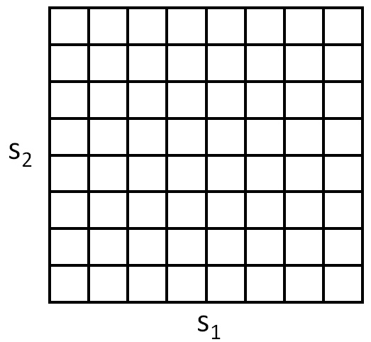
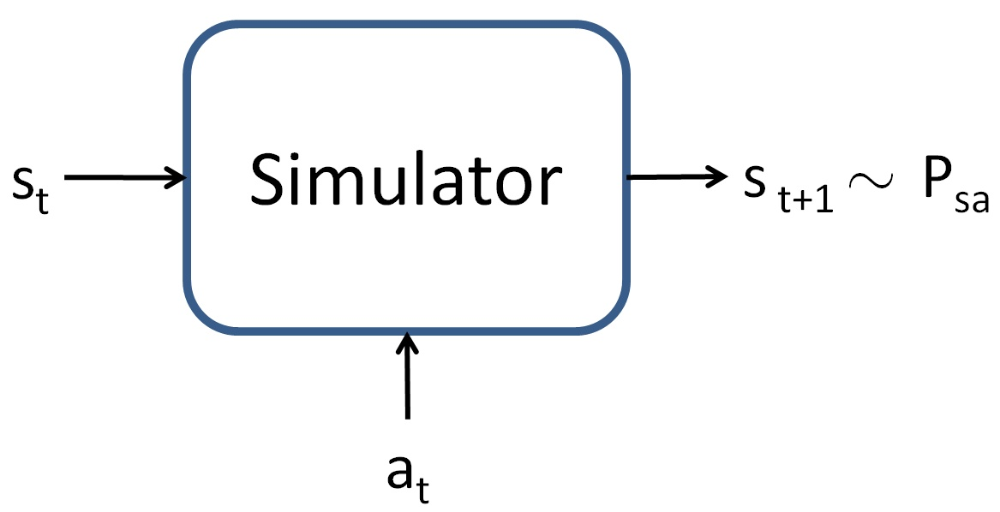

Lecture 16: Reinforcement Learning Basics and Policy Gradient
Video blocked (ad-blocker or local file mode).
Watch on YouTubeVideo not loading? Watch on YouTube
Original lecture. Tengyu Ma introduces RL through robotics: MDPs, values, and the policy gradient. [uncertain] The YouTube metadata title for this video is mislabeled; the title here follows the transcript.
How to read this lesson
This lesson has two levels. Level 1 (Core) contains what you need to understand everything that follows in CS229 and the courses that build on it. Level 2 (Deep) contains what you need for correct, interview-grade understanding. Read Level 1 straight through. Return to Level 2 when you want depth.
No prerequisites are assumed. Every term is defined at first use. Gradients and the loss chip were defined in lectures 2 and 8; they are reused, not re-explained.
Level 1: Sequential decision making
Prediction answers a question and stops. Sequential decision making acts, and each action changes the future 00:53 ⏱00:53. Operate a robot: go left, raise the arm, grasp. Place an order. Every decision has ramifications: downstream consequences that a single-step view misses.
Two complications define the field. Greedy fails: what is optimal now may be terrible later 02:32 ⏱02:32. A robot that grabs the nearest object may block its own arm. And decisions trade return against risk: some actions are not optimal now but collect information 03:06 ⏱03:06, exploring to decide better later.
The lecture uses robotics as the clean vehicle. The mathematics is identical for language models, but robotics keeps the RL setting separate from the LLM application. Lecture 17 reunites them.
Supervised learning predicts from labeled examples: the right answer is given. RL acts in a world: no correct action is given, only rewards after the fact, and actions change what happens next. Supervised learning is one-step with answers. RL is multi-step with consequences. The feedback is weaker and delayed, which is why RL is harder. Greedy maximizes immediate reward and ignores the future. In sequential problems the immediate best action can lead to a dead end: a chess move that wins a pawn and loses the game. Optimal behavior maximizes total return over the whole trajectory, which requires valuing future states, not just present rewards.
Level 1: The MDP
The Markov decision process (MDP) formalizes the setting. Five parts. States S: where the world is. Actions A: what the agent can do. Transition dynamics P(s’ | s, a): how the world changes 11:58 ⏱11:58. Reward R: the score for each transition. Discount gamma: how much the future matters relative to now.

A policy pi(a | s) is the agent’s behavior: the probability of each action in each state. The goal: find the policy maximizing the expected return, the total discounted reward 26:12 ⏱26:12. Markov means the future depends on the present state only, not the full history. The state summarizes everything relevant.


A mapping from states to action probabilities: pi(a|s). Deterministic policies pick one action per state. Stochastic policies randomize. The policy is what learning optimizes: the agent’s behavior is the parameter. Everything else, dynamics and rewards, is the world the policy operates in. Three reasons. Mathematical: discounting keeps infinite sums finite. Practical: near rewards are more certain than far ones. Conceptual: it encodes time preference. Gamma near 1 plans far ahead. Gamma near 0 is myopic. The discount is a hyperparameter with behavioral meaning.
Level 1: Value functions
The value of a state under a policy is the expected total return starting there 40:13 ⏱40:13: V^pi(s). The optimal value V*(s) is the best achievable: max over policies. Values turn the sequential problem into a local one: a good action is one leading to high-value states.
Values satisfy the Bellman equation 43:43 ⏱43:43: the value of a state equals the immediate reward plus the discounted value of the next state, in expectation. This recursion is the workhorse of RL theory. Solve it and the optimal policy reads off: act to reach the highest-value next state.
The lecture notes the classical algorithms that solve Bellman equations, then sets them aside. This quarter focuses on the algorithms that survive the jump to language models. The classical ones need the dynamics known and the state space small. LLMs have neither.
It compresses the future into a number per state. Instead of reasoning about whole trajectories, the agent compares single numbers: this state is worth 10, that one 3. Planning becomes local choice plus value lookup. Learning values is often easier than learning policies directly, which is why actor-critic methods keep both. You can, and policy gradient does. But values help twice: they judge actions during learning, and they reduce variance as baselines. The lecture’s path goes through policy gradient first because it is the precursor to LLM training. Values return as the variance-reduction tool in lecture 17.
Level 1: Policy gradient (REINFORCE)
Policy gradient, also called REINFORCE 56:22 ⏱56:22, is the precursor to every LLM training algorithm in this course. It optimizes the policy directly by gradient ascent on expected return.
The trick is the log-derivative: grad log pi = grad pi / pi. The gradient of the expected return becomes an expectation over trajectories:
grad J = E[ sum over t of grad log pi(a_t | s_t) * R ]
Sample trajectories from the current policy. Weight each trajectory’s action-gradients by its total return. Good trajectories push their actions’ probabilities up. Bad ones push them down.

It works only for stochastic policies 57:30 ⏱57:30. Deterministic policies have no log-probability to differentiate. The randomness is load-bearing: it explores, and the gradient needs the exploration distribution.
The gradient is an expectation over trajectories sampled from the policy, weighted by grad log pi. A deterministic policy assigns probability 1 to one action and 0 to the rest: no sampling distribution, no log-probability gradient, no exploration. Stochasticity is not a convenience. The mathematics requires a distribution to differentiate through. Returns vary wildly across trajectories, so the gradient estimate is noisy. A lucky trajectory pushes its actions up whether they were good or just lucky. Baselines fix this: subtract a state-dependent value so only better-than-expected actions get pushed up. Lecture 17 makes the baseline the advantage function.
Level 2: The log-derivative trick, carefully
The trick converts a gradient of an expectation into an expectation of a gradient. Start: grad_theta E_{x ~ p_theta}[f(x)]. The distribution depends on theta, so the gradient hits both f and p. Rewrite p * grad log p for grad p. The p rejoins the expectation. Result: E[f(x) * grad log p_theta(x)]. The expectation is now over the current distribution, which you can sample.
This is the score-function estimator. It needs no derivatives of f: f can be a black-box reward, a simulator, a human rating. That generality is why RL scales to LLMs, where the reward is “did the answer match” and nothing is differentiable. The price is variance: black-box feedback is noisy, and the estimator feels it.
Level 2: On-policy and its costs
Policy gradient is on-policy: trajectories must come from the current policy. Update the policy and yesterday’s trajectories are stale. Every gradient step needs fresh samples. For robotics that means fresh simulator rollouts. For LLMs it means fresh generations.
Fresh samples are expensive. The field’s central engineering problem is sample efficiency: learn as much as possible per trajectory. PPO, in lecture 17, reuses samples carefully with importance weights. The on-policy constraint is the reason RL training is sample-hungry in a way supervised training is not. Supervised data is reusable forever. On-policy data expires every update.
Recap: the whole lesson on one screen
Eight ideas carry this lecture. Read each card. Say the core sentence out loud. If you can, you own the lesson.
Actions change the future. Greedy fails. Some actions collect information. Prediction stops; decisions continue.
Key: multi-step with consequences
P(s'|s,a) is the world model. Pi(a|s) is the behavior. Maximize expected discounted return. Markov: now summarizes history.
Key: five parts, one goal
Cells are states, moves are actions. Small enough to solve exactly. The intuitions scale to robots and tokens.
Key: toy with the full structure
V^pi(s): expected return from s. V*: the best achievable. Bellman: value = reward now + discounted value next.
Key: one number per state
grad J = E[sum grad log pi * R]. Sample, score, shift probability toward winners. Precursor to all LLM RL.
Key: log-derivative trick
No distribution, no gradient, no exploration. Deterministic policies cannot use policy gradient. Randomness is the mechanism.
Key: pi(a|s) must spread
Fresh trajectories per update. Supervised data is forever; on-policy data dies each step. Sample efficiency is the engineering problem.
Key: every update needs new samples
Lucky trajectories mislead. Baselines subtract the expected, keeping only better-than-expected. Lecture 17 builds the advantage.
Key: noise needs a baseline
Official sources and further reading
Official: - Lecture 16 video: sequential decisions 00:53 ⏱00:53, greedy fails 02:32 ⏱02:32, information gathering 03:06 ⏱03:06, transition dynamics 11:58 ⏱11:58, expected return 26:12 ⏱26:12, value function 40:13 ⏱40:13, Bellman 43:43 ⏱43:43, REINFORCE 56:22 ⏱56:22, stochastic only 57:30 ⏱57:30. - CS229 Spring 2026 official course notes: RL chapter; the gridworld and simulator figures above are from it.
Further reading: - Sutton and Barto, Reinforcement Learning: An Introduction (2nd ed.): the canonical text. - Williams (1992), “Simple Statistical Gradient-Following Algorithms for Connectionist Reinforcement Learning”: the REINFORCE paper.
Caveats from these sources. The lecture skips classical dynamic-programming algorithms; the notes cover them for completeness. The robotics framing is pedagogical: real robot RL adds safety and sample constraints the lecture omits. Discount selection is task-dependent; the lecture gives the concept, not a value.
Connections to the other courses
- CS336: RLHF and RLVR are this lecture’s algorithms applied to language models at scale.
- CS224N: dialogue policies were early RL-for-language applications.
- CS329H: bandits are the single-step special case; mechanism design is multi-agent RL.
RL basics cheatsheet. Sequential decisions: actions change the future; greedy fails; explore to inform. MDP: S, A, P(s’|s,a), R, gamma. Policy pi(a|s): the behavior, what learning optimizes. Goal: max expected discounted return. Values: V^pi(s) expected return; V* optimal; Bellman recursion. REINFORCE: grad J = E[sum grad log pi * R]; sample, weight by return; stochastic policies only. On-policy: fresh samples per update. Variance: needs baselines.
The future has a price. Every RL concept is a way to value future consequences in present decisions. Values compress trajectories. Discounts weigh time. Baselines remove luck. The machinery prices the future.
Sources
- VIDEOLecture 16 video, Stanford Online YouTube
- NOTESOfficial subtitle transcript (en-US)
- NOTESCS229 Spring 2026 official course notes (local PDF)